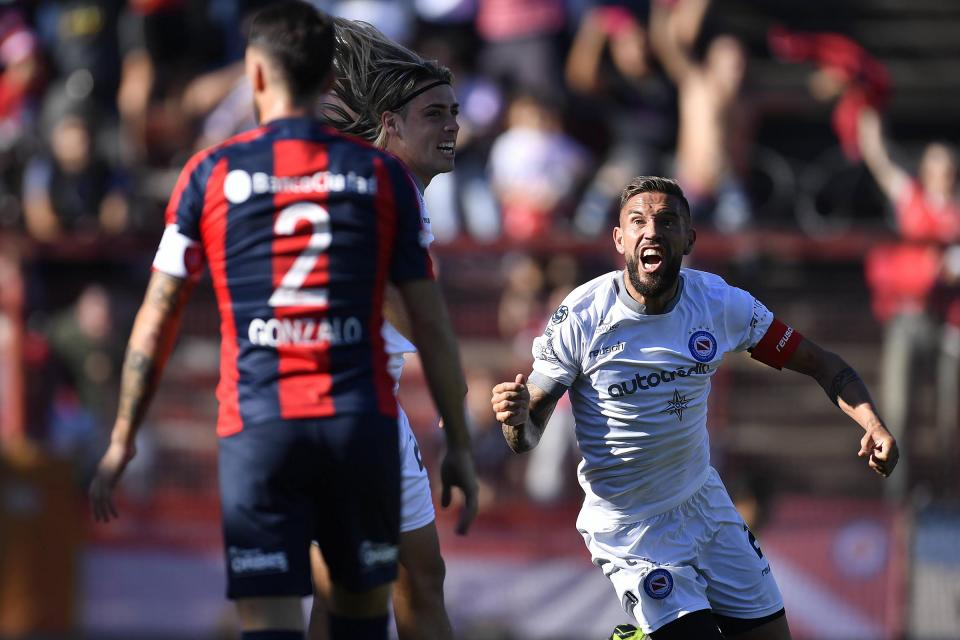

San Lorenzo-Argentinos, Superliga: el Ciclón goleó y Monarriz fue confirmado hasta fin de año

Un respiro, un alivio entre tantos cachetazos. Una goleada que no esperaba nadie en el Nuevo Gasómetro, pero que fue justificada de punta a punta. Al menos por un rato, San Lorenzo recuperó la sonrisa, un gesto que parecía extraviado. El Ciclón goleó por 3-0 al líder Argentinos con goles de Gonzalo Rodríguez, Adolfo Gaich y Ángel Romero y cortó una racha de cuatro derrotas consecutivas. Una alegría para el entrenador Diego Monarriz, a quien Marcelo Tinelli confirmó hasta fin de año en el cargo junto con Hugo Tocalli. ¿Qué sucederá con Néstor Gorosito? Por ahora es una incógnita.
De entrada el clima era diferente. No tan espeso como la última vez que San Lorenzo había pisado el Nuevo Gasómetro contra Defensa y Justicia, cuando la derrota desencadenó la salida de Juan Antonio Pizzi. Es la atmósfera actual del Ciclón, que transita sus días sumido en la incertidumbre.